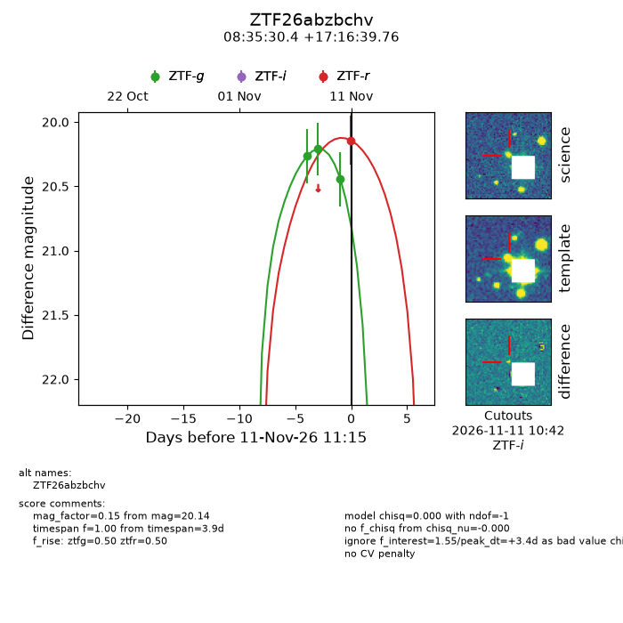
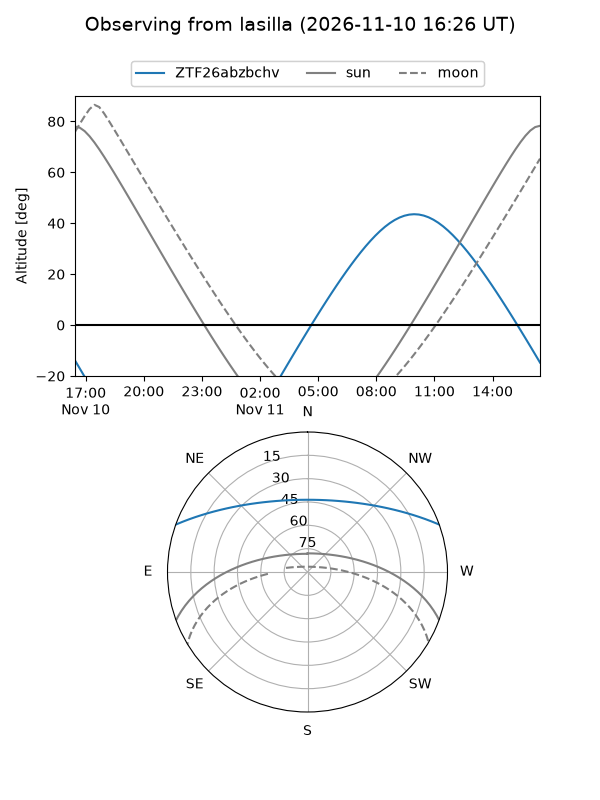
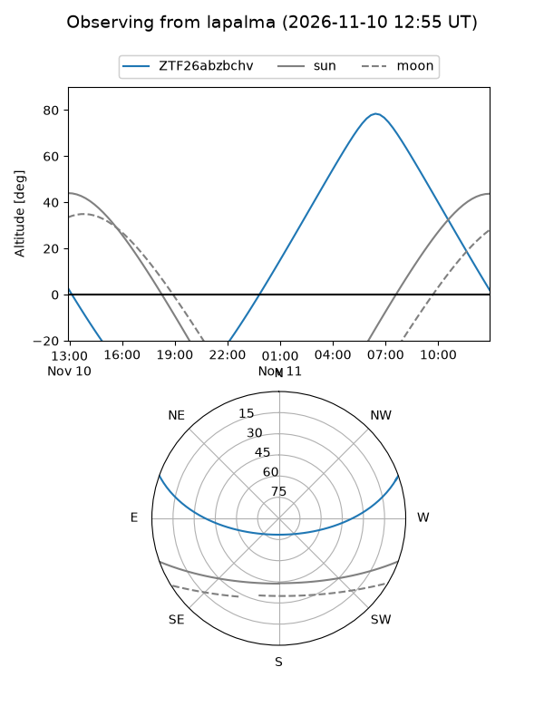
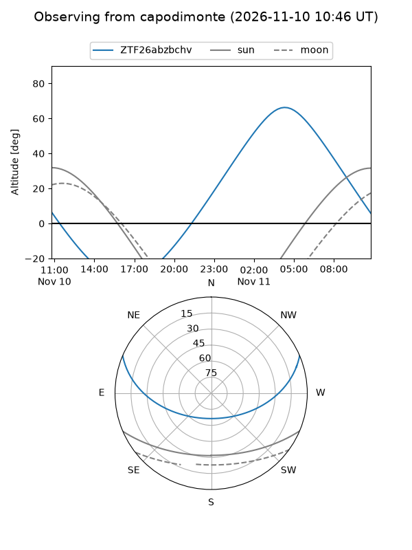
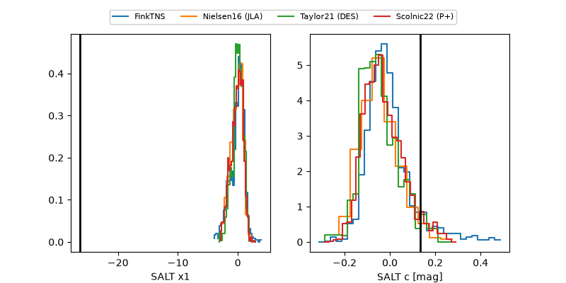

ZTF26abzbchv
Target ZTF26abzbchv at 2026-11-11 11:18
Aliases and brokers:
FINK-ZTF: ztf.fink-portal.org/ZTF26abzbchv
Lasair-ZTF: lasair-ztf.lsst.ac.uk/objects/ZTF26abzbchv
ALeRCE-ZTF: alerce.online/object/ZTF26abzbchv
Direct TNS query: direct search
alt names
ZTF26abzbchv (ztf,fink_ztf)
Coordinates:
equatorial (ra, dec) = 128.8769,+17.27771
equatorial (HMS+DMS) = 08:35:30.44,+17:16:39.76
galactic (l, b) = (208.0469,+30.54405)
Flags:
peak dt: +3.4
Photometry:
last ztfg=20.44, ztfr=20.14
3 ztfg, 1 ztfr detections
Lightcurve

Visibility



Additional plots
